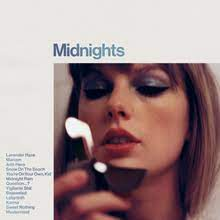

5. Would've, Could've, Should've
This song truly embodies the feeling of regretting your first love that turns out to be toxic, but we are too blind by young love to see it. "Give me back girlhood it was mine first,", this lyric is so powerful in showing how your youth can be ruined over a bad relationship. Song link
4. Champagne Problems
This song to me talks of a picture perfect couple that has their whole life planned out for them, but it's not all that it seems. Two people who were just not good for each other, and when it came time to make the next steps in life, she wasn't ready. "love slipped beyond your reaches and I couldn't give a reason Champagne Problems.". Song link

3. Cardigan
Wow, this song just gives me all the feelings. To me, this song is about finding someone who sees your worth after struggling with not feeling enough to someone, which is beautiful. On the other hand, it also speaks of first heartbreak which a lot of people can relate to the pain of that. Overtime, it also talks of finally healing from that heartbreak, "And when I felt like I was an old Cardigan under someone's bed, you put on and said I was your favorite." Song link

2. Cruel Summer
To be honest, the lyrics don't speak to me as much as the music does in this song. The bridge in this is just so much fun to sing to in the shower or in the car with the windows down. "And I scream 'For whatever it's worth I love you, ain't that the worst thing you ever heard?"" Song link

1. All Too Well(10 Minute Version)(Taylor's Version)
This masterpiece of a song tells a whole story. Thinking you're in love with someone but them not reciprocating it back, the isolating feeling of not being treated correctly all plays out in this song. Taylor paints such a beautiful and sarrowful setting as she recounts her short relationship with someone who never showed his true feelings and treated her poorly. "And you call me up again just to break me like a promise, so casually cruel in the name of being honest." Song link